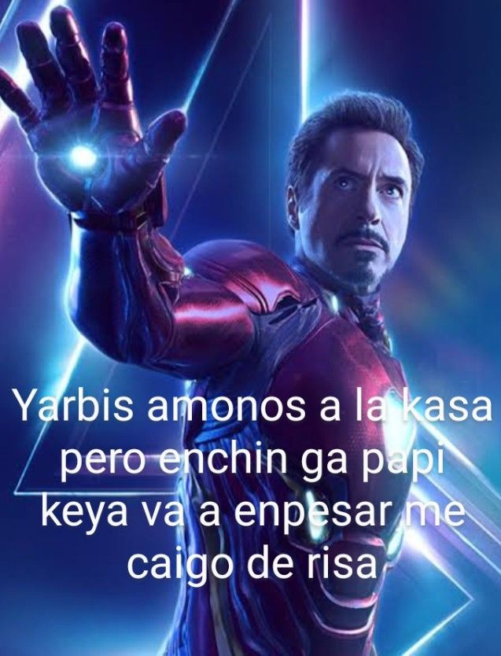

CUARTO
Este ultimo es el cuarto y ultimo documento de lo que es la prueba que supuestamente estamos haciendo hasta ahora pienso que es una estrategia para hackearnos a todos pero no creo, ojala no, que miedo alv, nono imaginate si eso pasara que mal nononono, aunque tambien es el cuarto yo digoo que aqui se duerme y ya se acaba la clasesita.

PRINCIPAL<----- PAG2-----> PAG3